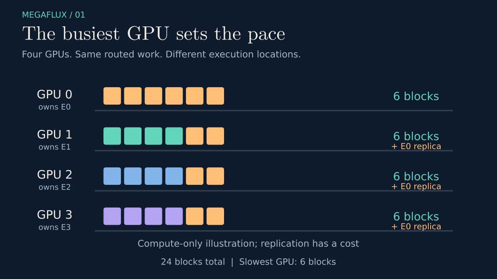
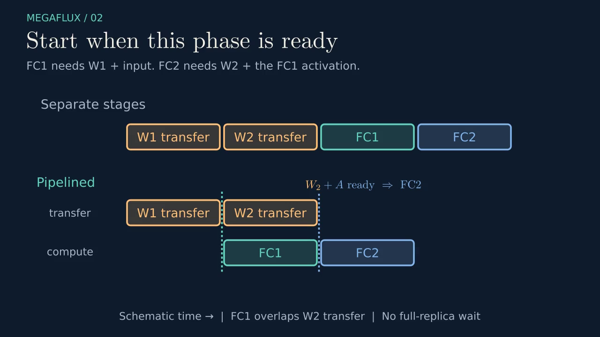
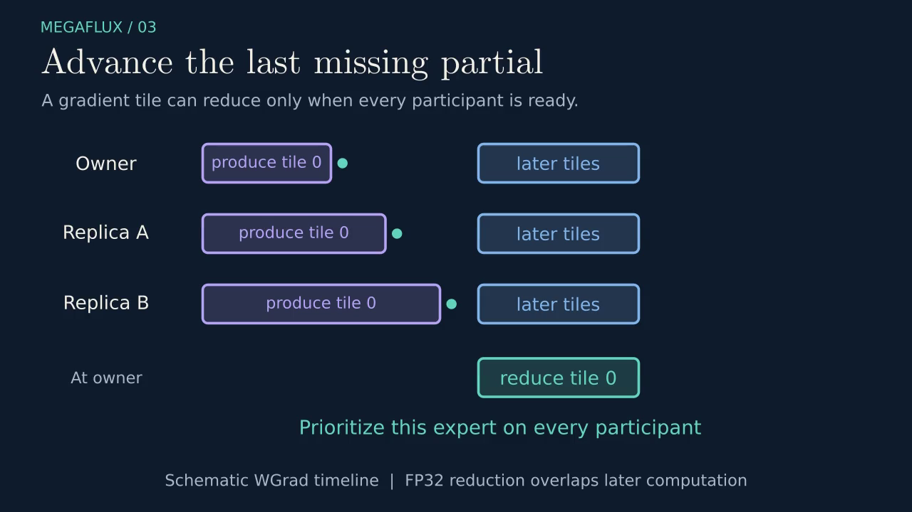

BEHIND THE ARTICLE / EDITORIAL DESIGN
How this article
teaches the paper.
The complete skeleton and visual storyboard, from the reader’s prerequisites to the last gradient partial.
Google’s Technical Writing guidance shapes the order, wording, and illustrations. This page makes those choices inspectable. Read the finished article →
Reader contract
Audience: an ML engineer familiar with transformer inference, matrix multiplication, and basic backpropagation. Explain expert parallelism, persistent kernels, tile readiness, and gradient reduction before relying on them. Keep the main path conceptual; put gradient algebra and planner details in expandable sections.
Reader outcome: explain why a well-pipelined MoE kernel can still have GPU stragglers; work through a valid token-block placement; identify the exact forward and backward dependencies that allow overlap; and distinguish layer speedups from end-to-end gains.
Scope: the design and evidence in arXiv:2610.00671v1, submitted September 30, 2026. The interactive model teaches the planner. It does not implement the CUDA executor, predict wall-clock latency, reproduce the experiments, or cover cross-node deployment.
Thesis: move some of a hot expert's blocks to spare GPUs, then bring the added weight and gradient communication inside the persistent execution schedule.
Google Technical Writing applied
| Lesson | Concrete editorial decision |
|---|---|
| Audience | State prerequisites; define MoE-specific terms; separate optional math from the main story. |
| Documents | Lead with the central result, give scope and learning goals, organize around reader questions. |
| Paragraphs | Start each paragraph with its technical point and develop one idea at a time. |
| Clear sentences | Use named actors and concrete verbs: the planner assigns, loaders wait, owners accumulate. Qualify every performance number. |
| Illustrating | Write each takeaway caption first, show one mechanism per scene, use consistent labels, add equivalent text, review readability. |
Typography and visual reference
Keep three typographic roles distinct: sans-serif for prose and explanatory labels; Computer Modern Typewriter for code and pseudocode; Computer Modern Serif / TeX for mathematical expressions. Headlines retain a larger editorial serif. Code appears in a dark, labeled panel with restrained syntax colors. Font files are self-hosted; attribution and the OFL license accompany them.
Visual references: 3Blue1Brown's Matrix multiplication as composition and What is backpropagation really doing?. Apply the pedagogical approach: establish the objects, preserve their color identities as they move, reveal the next dependency, pause, then introduce symbols. The scenes are original; no reference footage is republished. The forward scene uses actual Manim MathTex readiness expressions, distinct from its prose labels.
Article skeleton
| Beat | Reader question | Explanation and evidence | Transition |
|---|---|---|---|
| Opening | What is the central idea? | A busy expert creates a straggler; replicate work and pipeline the cost. Define the three learning goals. | First identify what is already optimized. |
| 1. The straggler | Why does a fused kernel still stall? | Expert ownership, dispatch/compute/return, layer latency as the slowest rank. Toy loads 12/4/4/4. Paper §2. | Moving tokens requires the destination to hold the expert weights. |
| 2. The plan | What may move, and what must remain fixed? | Keep expert IDs, weights, routing weights, and token identities. Partition once into blocks, assign under replica limits. Interactive model. §3.1, Appendix A. | A good assignment creates communication obligations. |
| 3. Forward | When may a replica start? | FC1 needs W1 and input; FC2 needs W2 and activation. Reuse communication warps. §3.2. | Training adds gradients that must return to owners. |
| 4. Backward | Why does one early partial not suffice? | DGrad before WGrad dependencies; all contributors must publish a matching tile. Coordinate replicated-expert priority. §3.2, Appendix A.2. | A plausible mechanism still needs a controlled evaluation. |
| 5. Evidence | What do the reported speedups measure? | Separate same-kernel low-precision grid, same-plan ablations, BF16 prior-art comparison, and vLLM prefill. §4, Table 1, Appendix B. | Identify where the benefits stop. |
| 6. Judgment | When would this be worth implementing? | Skew, spare capacity, work volume, topology, and exposed replication cost. No automatic gate in the evaluated design. §4.6. | Use retrieval questions to test understanding. |
| Closing | Can I reconstruct the design? | Five revealable questions, compact glossary, paper and writing references. | Return to the paper with a dependency-first reading map. |
Storyboard: original Manim illustrations
All time widths are schematic. The dark background, amber work blocks, teal progress, and violet gradient tiles remain consistent. Color is reinforced by labels. Use native video controls, no autoplay, PNG posters, HTML transcripts, and text explanations.
Scene 1 — RoutingSkew (~13 seconds)

Caption: Redistributing the same expert's blocks shortens the busiest queue.
- Establish four GPU lanes and one owner expert per lane. Show 12 amber E0 blocks on GPU 0 and 4 locally owned blocks on each other GPU. Label “24 blocks total.”
- Draw a maximum-load marker and label “Slowest GPU: 12 blocks.” Explain that overlap within a GPU does not change which GPU owns the work.
- Reveal E0 replica labels on GPUs 1–3. Mark that weights must also move.
- Animate two E0 blocks to each of GPUs 1–3. Preserve colors and block identities. Finish with six blocks per GPU.
- Replace the load label with “Slowest GPU: 6 blocks.” Add “Compute-only illustration; replication has a cost.”
Source: §2 and §3.1. Deliberately reduced to four GPUs, four experts, and one replica slot per receiver; the paper evaluates eight GPUs. No elapsed-time or measured-speedup implication.
Scene 2 — ForwardPipeline (~13 seconds)

Caption: FC1 can begin after W1 arrives while W2 is still moving.
- Establish a separate-stage strip: W1 transfer, W2 transfer, FC1, FC2 in sequence. State that input is ready in this example.
- Establish two pipelined lanes: weight transfer and replica compute. Reveal W1 transfer first.
- At W1 readiness, start FC1 under the W2 transfer. Show a vertical dependency cue, not a global barrier.
- Start FC2 only after both FC1's activation and W2 are ready. Highlight the overlapped interval.
- Finish on a stable frame: “Two readiness conditions; no full-replica wait.”
Source: §3.2 and schematic Figure 2. FC1/FC2 timing and transfer durations are invented for teaching. Owned-expert work and finer tiling are omitted from this focused scene and described in prose.
Scene 3 — BackwardReduction (~14 seconds)

Caption: Reduce a gradient tile when every participating copy has produced its partial.
- Establish owner, replica A, and replica B lanes. Each produces the same numbered gradient tile at a different time.
- Publish the owner's partial and A's partial. Keep the owner-side reduction blocked with “Waiting for replica B.”
- Publish B's partial. Change the dependency indicator to “All tile 0 partials ready.”
- Animate contributions into the owner accumulator in a fixed order. While this happens, reveal later-tile computation in the producer lanes.
- Finish on “Prioritize this expert on every participant.” Describe why prioritizing only one replica does not advance the last prerequisite.
Source: §3.2. Uses three participants for clarity; neither participant count nor bar widths represent measurements. Fixed-order FP32 accumulation is part of the design; bitwise equivalence across arbitrary hardware is not claimed.
Interactive and data storyboard
The planner uses four GPUs and four home experts, with adjustable E0 block count and replica budget. Show before/after per-GPU loads, expert identities inside the after bars, the average-load lower bound, total conservation, maximum load, and replica count. A training mode applies the paper's reduction-aware pruning with λ = 12. Label outputs as a block-load model, never as predicted latency. Provide a reset control and live textual results.
The evidence panel shows geometric means and maxima as separate, labeled quantities. A semantic table contains the six exact end-to-end speedups from Table 1. An optional Amdahl calculation is explicitly an illustrative inference. Never generate a dense experimental curve from sparse headline values.
Review gates
- Every result names its baseline, precision, workload, and measurement scope.
- No schematic is described as a benchmark or an exact GPU schedule.
- Each numeric paper claim links to a section or table.
- The toy planner conserves blocks, uses integer assignments, and respects replica capacity.
- The article distinguishes the exact mathematical objective, the bounded heuristic, and a latency predictor.
- Mobile and desktop layouts, video playback, keyboard controls, and all internal links work.
- Publication uploads only this repository's static site and original content.